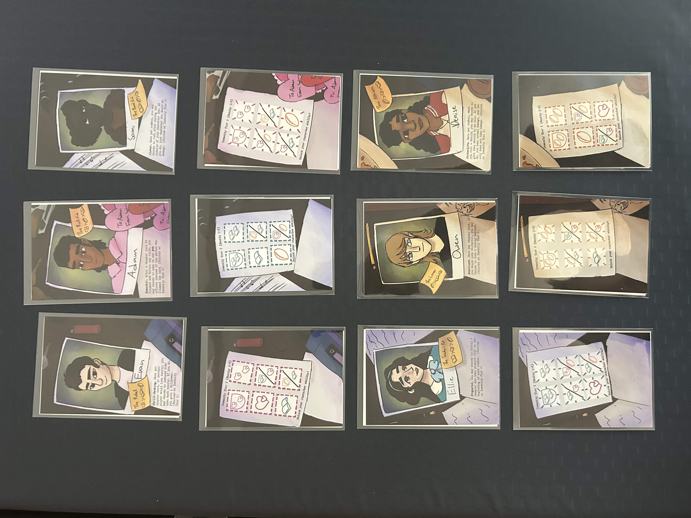
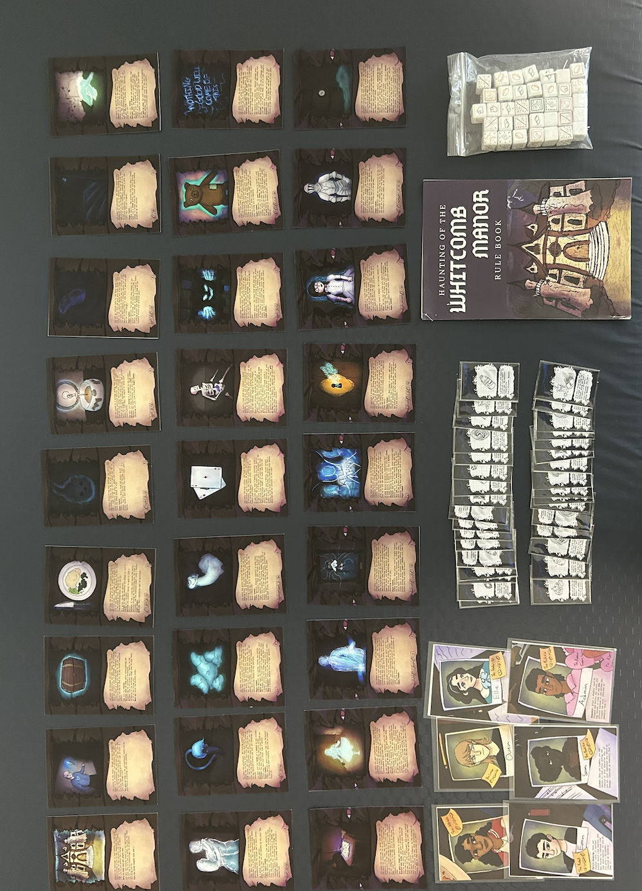
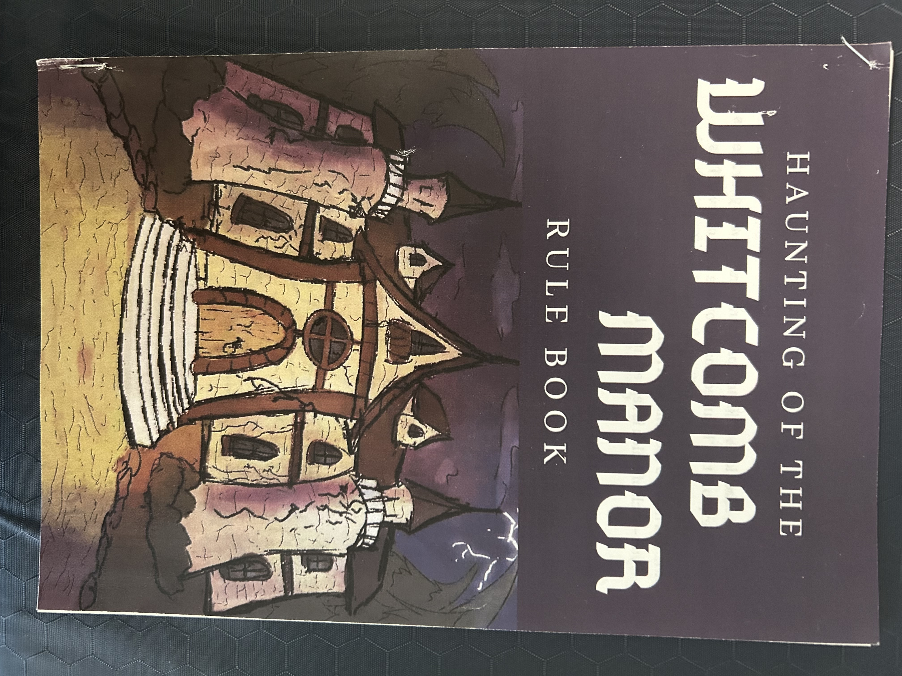
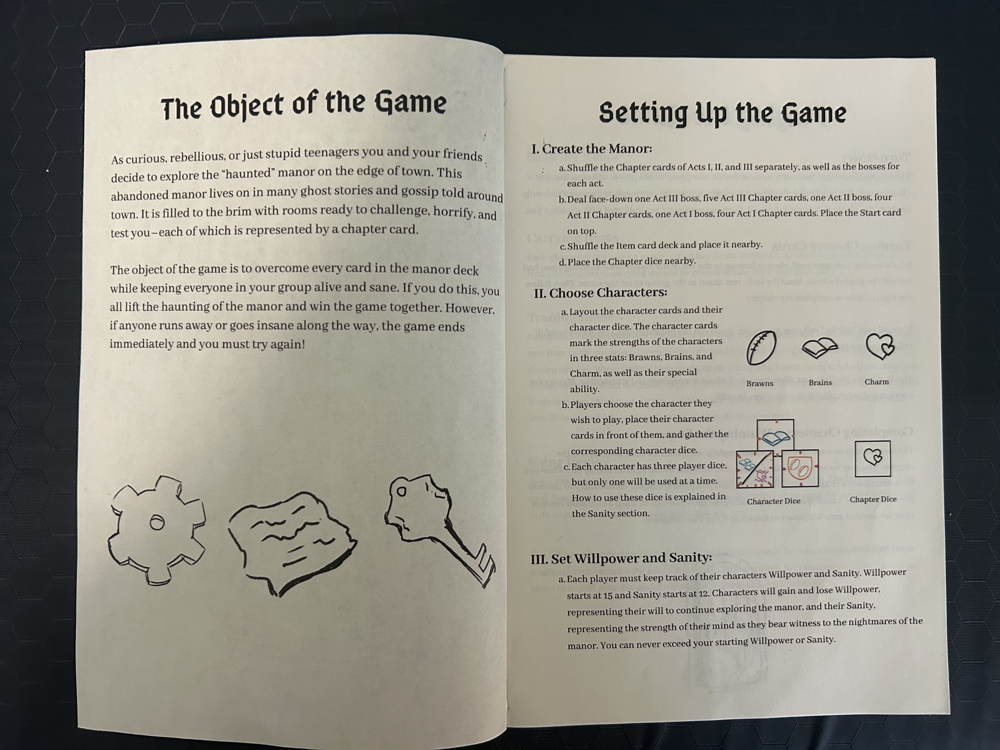
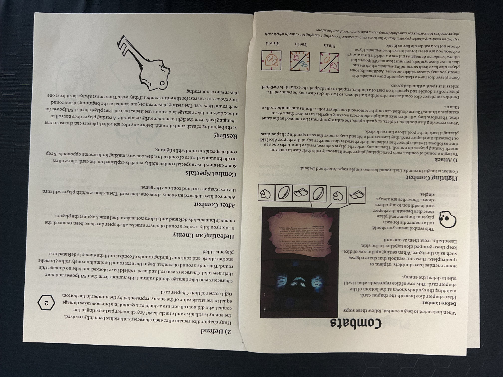
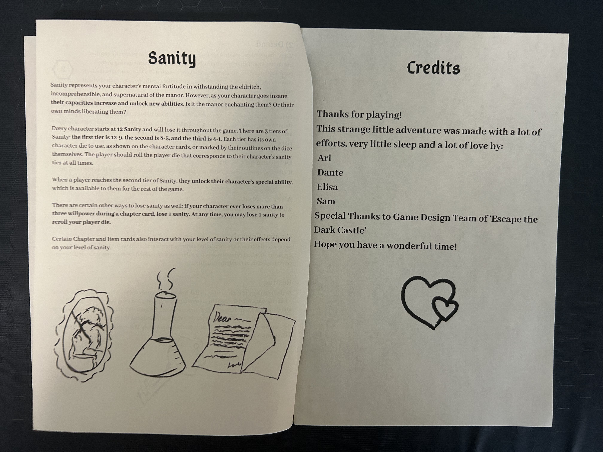

Game Design: Role Playing Game
Haunting of the Whitcomb Manor
Team: Ari, Dante, Elisa, Sam | Format: GM-less cooperative horror RPG | Players: 4

A GM-less cooperative horror RPG for four players, built on the structure of Escape the Dark Castle. You're teenagers who decide to explore the abandoned manor on the edge of town. The goal is to survive with everyone alive and sane. If anyone runs away or loses their mind, the haunting wins.
My Contributions
- Narrative design: wrote the chapter card story text, the premise, and the rulebook voice
- Game mechanics: designed the sanity tiering system, the collective turn-order structure, and the resting mechanic
- Visual design and fabrication: rulebook layout in Adobe Illustrator, hand-illustrated components, produced physical cards and dice at the Harvey Mudd Makerspace and Scripps Fab Lab
Photos





